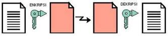

Kriptografi Modern
Algoritma kriptograafi modern umumnya beroperasi dalam mode bit ketimbang mode karakter (seperti yang dilakukan pada cipher sibstitusi atau cipher transposisi dari algoritma kriptografi klasik). Operasi dalam mode bit berarti semua data dan informasi (baik kunci, plaintext maupun ciphertext) dinyatakan dalam rangkaian (string) bit binner, 0 dan 1. Algoritma enkripsi dan deskripsi memproses semua data dan informasi dalam bentuk mode bit. Rangkaian bit yang menyatakan plaintext dienkripsi menjadi ciphertext dalam bentuk rangkaian bit, demikian sebaliknya.
Enkripsi modern berbeda dengan enkripsi konvensional. Enkripsi modern sudah menggunakan komputer untuk pengoperasiannya, berfungsi untuk mengamankan data baik yang ditransfer melalui jaringan komputer maupun yang bukan. Hal ini sangat berguna untuk melindungi privacy, data integrity, authentication, dan non-repudiation. Perkembangan algoritma kriptografi modern berbasis bit didorong oleh penggunaan komputer digital yang merepresentasikan data dalam bentuk biner. Pengirim pesan akan mengatur sandi pada pesan awal yang nantinya menjadi kode dan hanya bisa dibaca oleh penerima pesan tersebut. Kemudian, penerima pesan akan mengembalikan kode-kode yang didapatkan menjadi pesan asli.
Algoritma Simetris
Symmetric cryptosystem atau kriptografi simetris atau disebut juga algoritma kriptografi konvensional adalah algoritma yang menggunakan kunci untuk proses enkripsi sama dengan kunci untuk proses dekripsi. Algoritma kriptografi simetris dibagi menjadi 2 kategori yaitu algoritma aliran (Stream Ciphers) dan algoritma blok (Block Ciphers). Pada algoritma aliran, proses penyandiannya berorientasi pada satu bit atau satu byte data. Sedang pada algoritma blok, proses penyandiannya berorientasi pada sekumpulan bit atau byte data (per blok).
Ini adalah jenis kriptografi yang paling umum dipergunakan. Kunci untuk membuat pesan yang disandikan sama dengan kunci untuk membuka pesan yang disandikan itu. Jadi pembuat pesan dan penerimanya harus memiliki kunci yang sama persis. Siapapun yang memiliki kunci tersebut – termasuk pihak-pihak yang tidak diinginkan – dapat membuat dan membongkar rahasia ciphertext. Problem yang paling jelas disini terkadang bukanlah masalah pengiriman ciphertext-nya, melainkan masalah bagaimana menyampaikan kunci simetris tersebut kepada pihak yang diinginkan. Contoh algoritma kunci simetris yang terkenal adalah DES (Data EncryptionStandard) dan RC-4, sebagaimana ditunjukkan pada gambar berikut :

Ada beberapa kelebihan menggunakan kunci
simetris yang sudah diketahui yaitu :
1. Kecepatan Operasi lebih tinggi bila dibandingkan dengan
algoritma asimetrik walupun hal ini berbanding lurus
dengan penambahan ukuran file
2. Enkripsi/dekripsi bergantung pada besarnya ukuran
file, semakin besar ukuran file semakin banyak waktu
yang dibutuhkan untuk enkripsi/dekripsi
3. Karena kecepatannya yang cukup tinggi, maka dapat
digunakan pada sistem real-time.
Kelemahan menggunakan kunci simetris Setiap pengiriman pesan
dengan pengguna yang berbeda dibutuhkan kunci
yang berbeda juga, sehingga akan terjadi kesulitan
dalam manajemen kunci tersebut, dan Permasalahan
dalam pengiriman kunci itu sendiri yang disebut “ key
distribution problem”.


Algoritma Asimetris
Pada pertengahan tahun 70-an Whitfield Diffie dan Martin Hellman menemukan teknik enkripsi asimetris yang merevolusi dunia kriptografi. Kunci asimetris adalah pasangan kunci-kunci kriptografi yang salah satunya dipergunakan untuk proses enkripsi dan yang satu lagi untuk dekripsi. Semua orang yang mendapatkan kunci publik dapat menggunakannya untuk mengenkripsikan suatu pesan, sedangkan hanya satu orang saja yang memiliki rahasia tertentu dalam hal ini kunci private untuk melakukan pembongkaran terhadap sandi yang dikirim untuknya. Sebagai contoh jika Anto mengirim pesan untuk Badu, Anto dapat merasa yakin bahwa pesan tersebut hanya dapat dibaca oleh Badu, karena hanya Badu yang bisa melakukan dekripsi dengan kunci privatnya. Tentunya Anto harus memiliki kunci publik Badu untuk melakukan enkripsi. Anto bisa mendapatkannya dari Badu, ataupun dari pihak ketiga seperti Tari.
Teknik enkripsi Asimetris ini jauh lebih lambat ketimbang enkripsi dengan kunci simetris. Oleh karena itu, biasanya bukanlah pesan itu sendiri yang disandikan dengan kunci asimetris, namun hanya kunci simetrislah yang disandikan dengan kunci asimetris. Sedangkan pesannya dikirim setelah disandikan dengan kunci simetris tadi. Contoh algoritma terkenal yang menggunakan kunci Asimetris adalah RSA (merupakan singkatan penemunya yakni Rivest, Shamir dan Adleman).

Algoritma Hybrida
Kriptografi kunci publik (disebut juga kriptografi asimetris) adalah sistem kriptografi yang menggunakan sepasang kunci, yaitu kunci publik yang bisa disebarkan dan kunci pribadi yang hanya diketahui oleh pemilik. Pembuatan kunci tersebut bergantung pada algoritme kriptografi yang menggunakan sifat matematis untuk menghasilkan fungsi satu arah.
Keamanannya secara efektif hanya berasal dari kunci pribadi yang disimpan dengan baik; kunci publik dapat disebarkan tanpa mengurangi keamanannya. Dalam sistem tersebut, tiap orang dapat mengenkripsi pesan dengan kunci publik penerima. Namun, hasil enkripsi tersebut hanya bisa didekripsi oleh penerima dengan kunci pribadi. Hal ini memungkinkan untuk, misalnya, mengirim pesan kepada server dengan mengenkripsinya memakai kunci publiknya. Pesan tersebut dapat berisi kunci baru yang akan dipakai untuk kriptografi simetris.
Sekarang, klien dan server dapat saling berkirim pesan dengan kunci simetris baru tersebut. Hal ini memiliki keuntungan karena dapat memanfaatkan laju kriptografi simetris yang lebih tinggi daripada kriptografi asimetris. Selain untuk enkripsi, kriptografi kunci publik juga bisa dipakai untuk autentikasi. Pengirim pesan dapat menambahkan tanda tangan digital pada akhir pesan. Siapa pun dapat memeriksa keaslian pesan dari pengirim dengan membandingkannya dengan kunci publik pengirim pesan. Bila gabungan pesan dan kunci publik cocok dengan tanda tangan digitalnya, pesan tersebut benar dibuat oleh pengirim pesan.